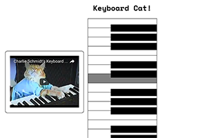

Francis Li
Software Engineer / Interaction Designer
Hi! I'm one of the Teaching Assistants for the Creative Code Immersive, Spring 2017 session, at the Gray Area Foundation for the Arts. This page will contain my brief notes and examples from the course.
-
Week 1
- Topic
- Web Skills
- Instructor
- Niki Selken
- Syllabus
- http://learn.nikiselken.com/p5js/index.html
-
April 11
Missed this day, but I heard it was intros, setup with Atom or Sublime code text editors (including searching for useful plug-ins), and some experimentation with Glitch (which apparently was too glitchy to use!) and CodePen.
-
April 13
Introduction to Github and git source code control, setup with Github Desktop and learning the basics of creating a repository, turning on Github Pages web serving, cloning a repository, committing changes, and synchronizing those changes with the remote repository. Introduction to the Mac Terminal and command-line interaction. High-level overview of basic website file structure, HTML, and CSS, and an introduction to the Chrome Developer Tools.
-
April 15
An HTML debugging exercise and then the first assignment- choose a popular Internet meme, then create a website that creatively describes and showcases that meme. Requirements: use a custom free Google web font, include a CSS hover interaction, and embed both an animated GIF and a streaming video.
Keyboard Cat!

Group office hour after class covered more keyboard and Terminal shortcuts, then a deeper dive into HTML and CSS to show how the top "business card" profile box was created on this page- a review of block vs inline elements, the CSS box model, and some common style attributes- width, margin, padding, border, etc. We saw an example of a more sophisticated CSS selector, the descendant selector which targets elements inside another element.
-
End